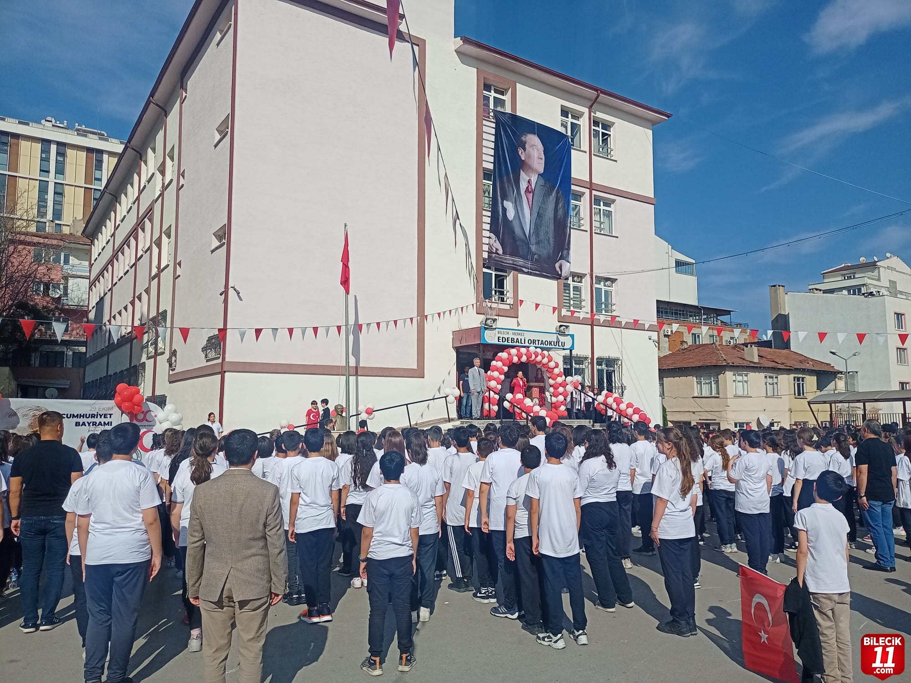
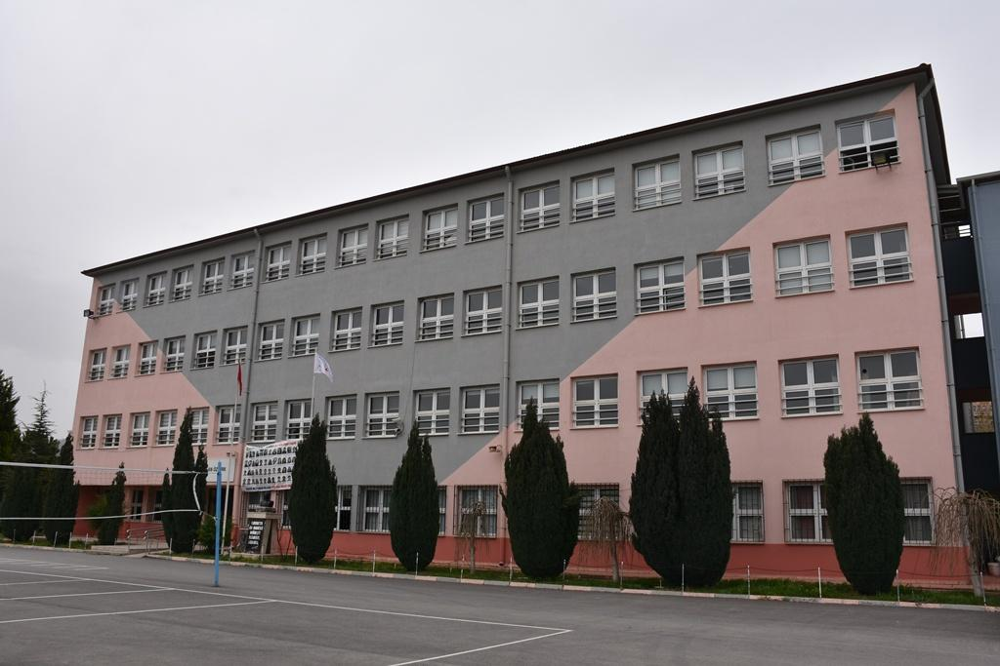

Eğitim Sürecim :
Bilecik Anaokulu :
Burası bilecik ilinin en çok tercih edilen anaokulu olarak biliniyor. Ben de yaklaşık 3 yaşımdan 7 yaşıma kadar bu okulda eğitimimi devam ettirdim. Burada arkadaşım olan birçok insanla şuanda hala arkadaşlıklarım devam ediyor. Bundan dolayı bu okul benim hayatıma karşıma çıkmış en şanslı kararlardan biri olmuştur. O zamanlar çok hiperaktif olduğum için okulda başıma birçok şey gelmiş. Arkadaşlarımla hala bu olayları hatırlayıp birbirimize anlatırız. Anaokulu maceram çok eğlenceli, çok eğitici, çok öğretici şekilde geçti.
Edebali Ortaokulu :
Birinci sınıftan sekizinci sınıfa kadar ilkokul-ortaokul eğitimimin tamamını bu okulda tamamladım. Anaokulundan tanıştığım nerdeyse tüm arkadaşlarımla bu okulda eğitimimize devam ettik. Birçoğuyla da aynı sınıfa denk gelmiştim. İyisiyle kötüsüyle muhteşem bir 8 sene geçirdim bu okulda. Birçok anı biriktirdim birçok şey öğrendim. O zamanlar en büyük eğlencem futbol oynamaktı. Teneffüslerde arkadaşlarımla birlikte hemen bahçeye çıkıp top oynardık. Okul takımında da bir sürü başarılarımız oldu. Turnuvalara katılıp şampiyonluklar kazandık. Futbol konusunda hayatımın en güzel yıllarıydı. 8 yılın birçoğunu futbol oynarak geçirdim. Kısaca çocukluğumun en güzel yılları bu okulda geçti.
Refik Arslan Öztürk Fen Lisesi :
Lise sınavının ilkinde biraz afallasamda ikincisinde elimden gelen her şeyi yapıp bu okulu kazandım. Aslında hedefim liseyi Eskişehir'de okumaktı fakat bazı aksaklıklardan dolayı puanım bu okula yetebildi. Gene de bu okulda kazandığım şeyler çok özeldi. Çok iyi öğretmenlerle tanıştım. Çok güzel şeyler öğrendim. Arkadaş konusunda çok şanslı olduğum için anasınıfından tanıştığım ilkokul ve ortaokulda da devam bu arkadaşlıklarımın birçoğu lisede de devam etti. Birçoğuyla aynı liseyi kazandık. Çocukluğum onlarla büyüdü. Akademik kariyerimin en sağlam temellerini burada bu arkadaşlarımla birlikte attım. Lise yıllarımın büyük çoğunluğu pandemiyle geçse de çok güzel yıllardı.
İstinye Üniversitesi :

Üniversite sınavına 2. kez girerek bu okulda Bilgisayar Mühendisliğini %100 burslu şekilde kazandım. İlk başlarda okulun çevresi ve kendisinin için tatlı,hoş gelse de sonralarda eğitim konusunda ve okula ulaşım konusunda çok büyük sorunlarla karşılaştım. Eğitimi bana göre yeterli değildi. İkamet ettiğim yer okuluma yaklaşık gidiş geliş 3-4 saat uzaklıktaydı. İstanbulun kalabalığı gerekçesiyle okula gitmek ve dönmek çok fazla yorucuydu. Bu da eğitim konforumu oldukça düşürdü. Yeteri kadar düşününce yatay geçiş yapabileceğim üniversitelere bakmaya başladım. Abimin tavsiyeleriyle kendisinin Sakarya Üniversitesinde okumasından dolayı bana Sakarya Üniversitesinden bahsetmeye başladı. Kafama yeteri kadar yatınca da senenin sonunda yatay geçişle burdaki eğitimime 1 yılın sonunda son verdim.
Sakarya Üniversitesi :

Önceki üniversitemden yeteri kadar memnun olmadığım için yatay geçişle bu okula geçtim. Aynı şekilde bölümümü değiştirmeden Bilgisayar Mühendisliğinde kalmaya devam ettim. Şuanda burada 2.sınıf öğrencisiyim. İlk geldiğimde biraz afallasam da bir süre sonra uyum sağladım. Abimle de aynı bölümü okuduğumuz için derslerime uyum sağlamamda büyük yol gösterici oluyor. Önceki üniversiteme kıyasla şuanki eğitimimden, mutluluğumdan, huzurumdan çok memnunum. Önümde koskoca bir 2 sene var. Bu süreçte kendimi en iyi şekilde geliştirip iş hayatına o şekilde geçmek istiyorum. Umarım her şey istediğim gibi olur.